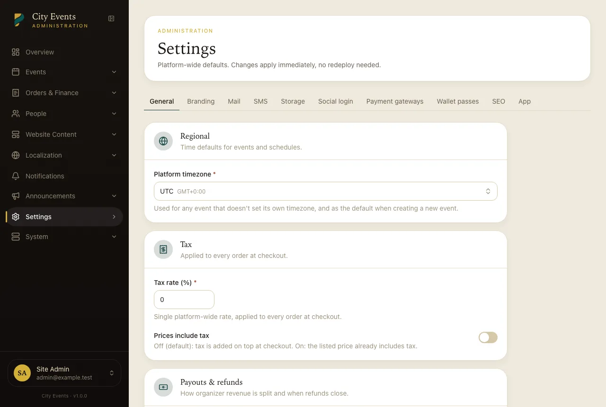
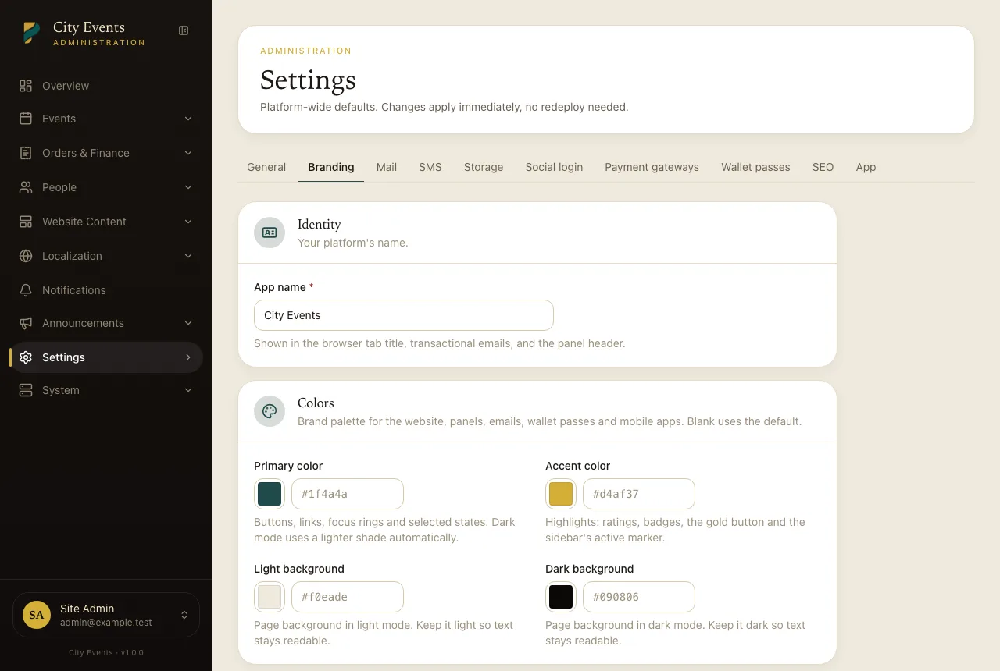

Admin Panel Tour
Where everything lives, for a super-admin logging in for the first time.
The Admin panel (/admin) is for the platform owner — settings, moderation, and
oversight across every organizer. It's a separate area from the Organizer panel; an admin account
can see everything, an organizer only their own.
Overview
The first screen after login shows how the whole platform is doing. Pick a period (last 7, 30 or 90 days, or 12 months) at the top right; every figure and chart follows it.
- Headline numbers: gross sales, platform fees, paid orders, tickets sold, and attendance (the share of tickets checked in at events held in the period). Each shows the change against the previous period of the same length, plus a small trend line.
- Sales trend: gross sales and platform fees over the period.
- Needs attention: anything waiting on you, such as events and organizer applications to approve, reviews to moderate, failed background jobs, a scheduler (cron) that isn't running, oversold orders, or mail and storage settings you haven't configured yet.
- Upcoming events with how full each one is, and top events by gross sales.
- Tickets by category, where the money goes (how gross sales split into the organizers' share, platform fees, and tax added at checkout), and recent activity (orders, new events, sign-ups).
Multiple currencies: PerfectEvents never converts between currencies, so money figures show one currency at a time. When you've sold in more than one, a currency switcher appears next to the period picker; it lists only currencies with sales and starts on your default currency. Order, ticket and attendance counts always include every currency.

Events
Every event across every organizer. This is where event approvals happen — a newly submitted event sits as "Pending" here until you approve or send it back with a note.
Organizers
Every organizer account, and where the other approval layer lives — reviewing a new organizer's application and approving, rejecting, or later suspending them. See Approvals for how this differs from event approval.
Users
Every account on the platform (customers, organizers, admins) — search, view, and manage individual accounts.
Reviews
Moderate buyer reviews left on events, if auto-approval is off (General settings).
Orders, Refunds, Payouts
Orders lists every order platform-wide with the ability to drill into one and issue a refund. Payouts is where organizer payout requests queue up for you to mark paid or reject.
Coupons
Platform-level coupon management, alongside whatever coupons individual organizers create for their own events — see Coupons.
Roles & permissions
Toggle which of the wireable permissions (event approval, settings management, payout approval, plus what organizers/staff can do) are granted to each role. See the permissions matrix for the full picture.
CMS: Pages, FAQ, Banners, Homepage, Menus
Static content pages, an FAQ list, promotional banners, the homepage's section layout, and header/footer menu items — see CMS & homepage.
Categories, Venues, Currencies, Countries
Reference data used throughout the platform: event categories, reusable venues, which currencies are active, and which countries are selectable in forms.
Notification templates
Edit the copy sent for each notification type — see Notification templates.
Languages & Translations
Add a language and translate UI chrome strings — see Localization.
Settings
Branding, general/tax/payout defaults, mail, storage, payment gateways, SMS, social login, and SEO — every buyer-configurable knob in the product lives here. Full list in the settings reference.


System
A read-only operations page: PHP/Laravel versions and the same requirement checklist the installer used, queue health (pending/failed job counts, last 5 failures), whether cron is actually running (a heartbeat timestamp), disk usage, and a tail of recent error-level log lines. Also has a "clear cache" button and the maintenance-mode toggle — turning maintenance mode on takes the public site offline while leaving the Admin panel itself reachable, so you can fix something without locking yourself out.